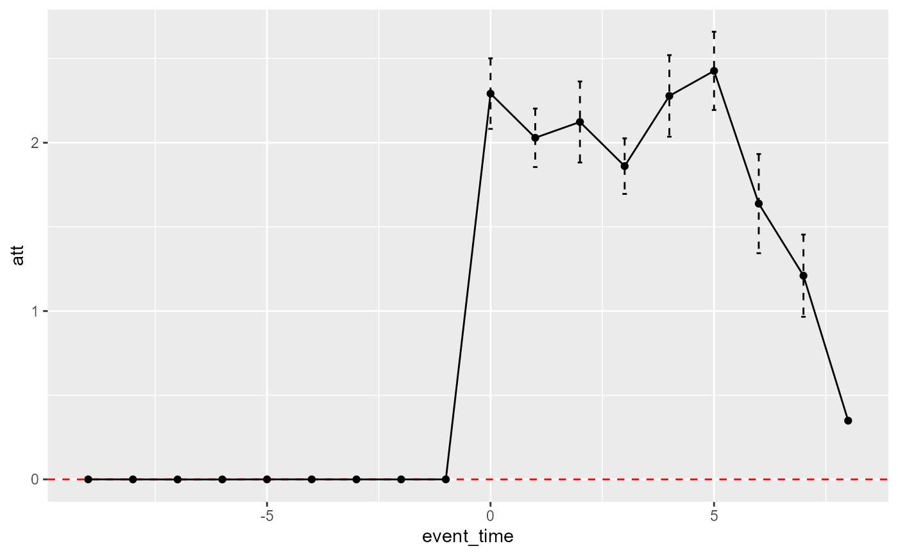

Plot event study results.
Usage
plot_did_dynamics(x, margin = "event_time")
Arguments
- x
A data table generated with [fastdid] with one-dimensional index.
- margin
character, the x-axis of the plot
Examples
# simulated data
simdt <- sim_did(1e+02, 10, seed = 1)
dt <- simdt$dt
#estimation
result <- fastdid(data = dt, timevar = "time", cohortvar = "G",
unitvar = "unit", outcomevar = "y",
result_type = "dynamic")
#plot
plot_did_dynamics(result)
